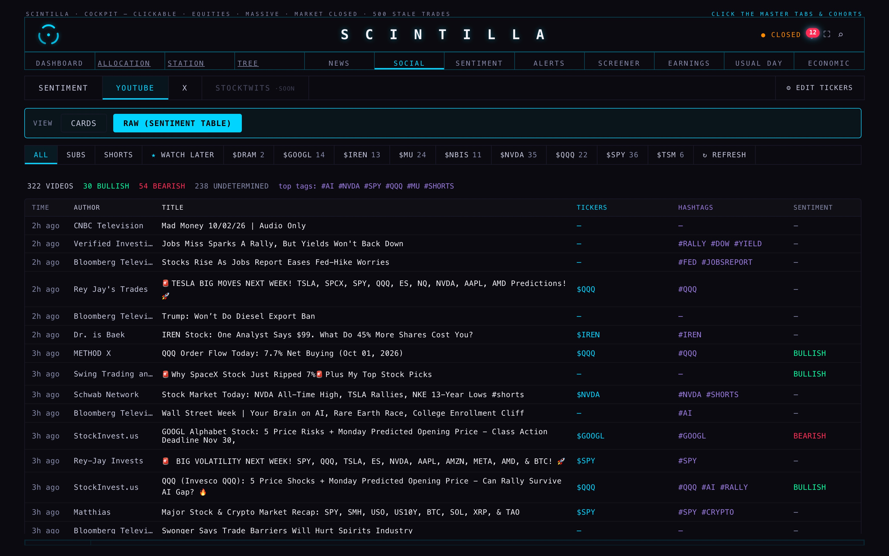
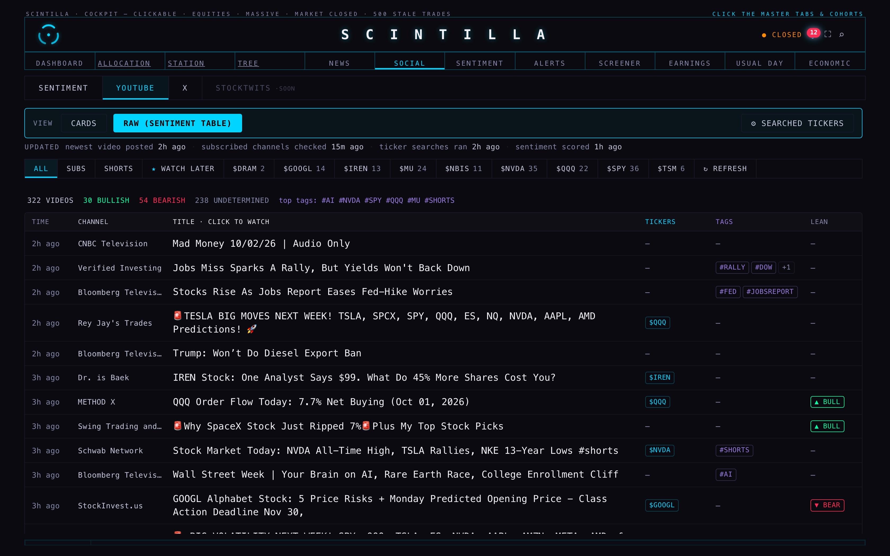
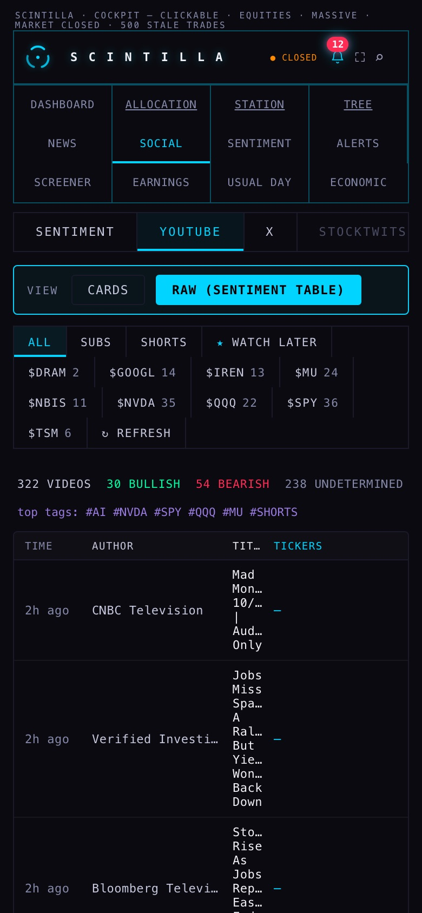
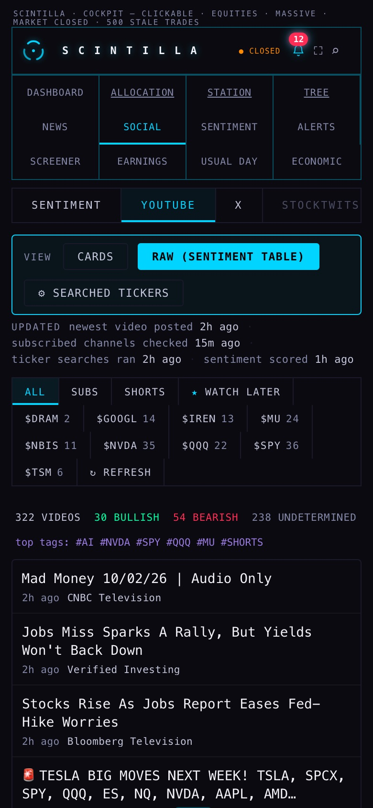
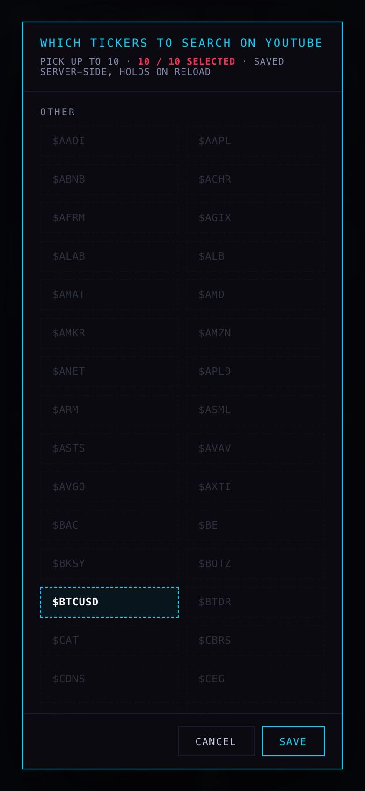
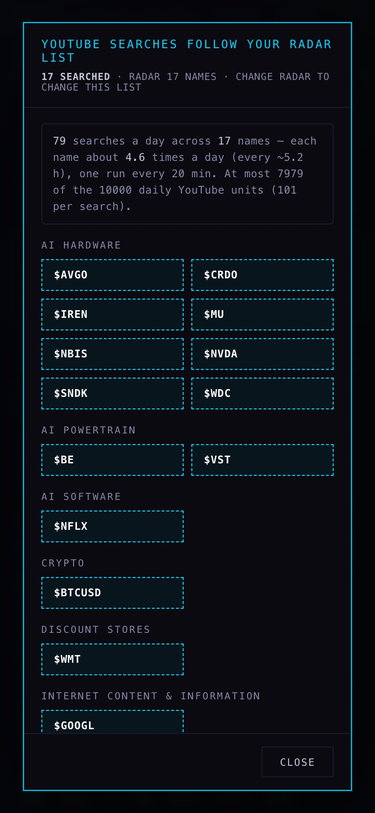
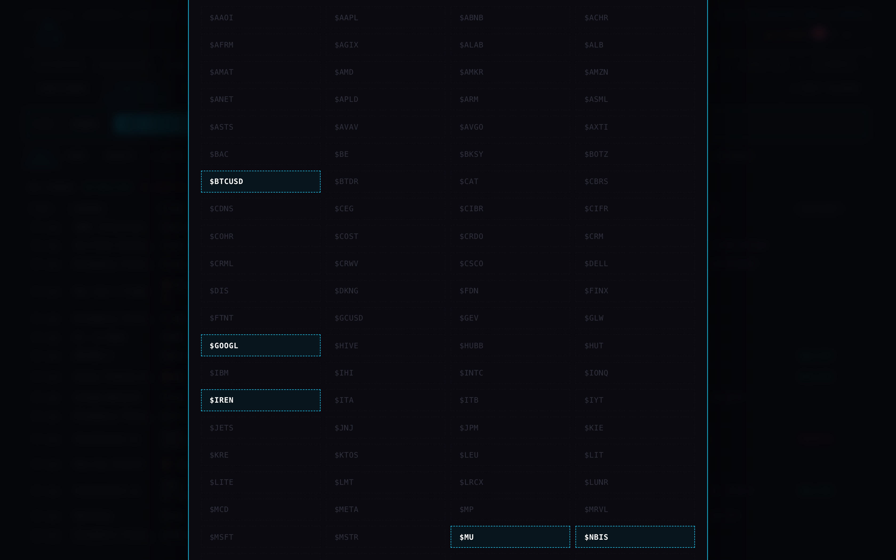
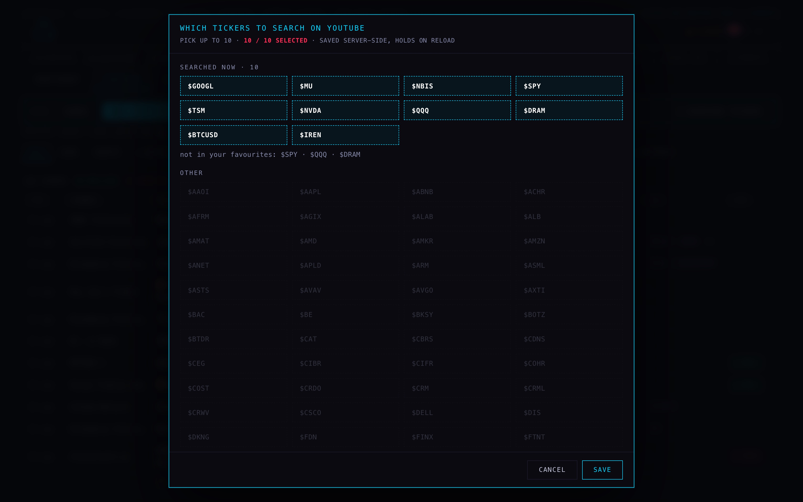
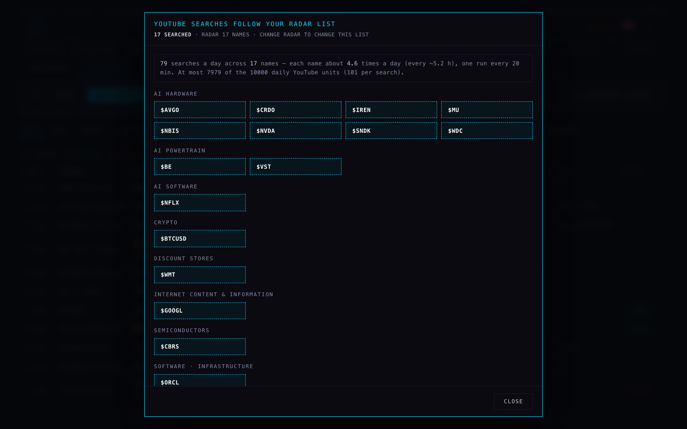

SOCIAL › YouTube — titles first, the ticker count, searches from RADAR
2 Oct 2026, night. The raw table now leads with the title, at reading size; the "10 of 10 but I see 7" window is fixed; and the ticker searches now follow your RADAR list, without SPY and QQQ, spread over the day inside the YouTube limit. The page changes are on a branch; the three back-end jobs are written but not deployed. The coordinator deploys them.
1 · Is it current?
Mostly yes. These are measured from the database at 02:00 UTC on 3 Oct (22:00 ET on 2 Oct):
| What | Newest | Verdict |
|---|---|---|
| Videos from your subscribed channels | posted 00:42Z, saved 00:50Z | Current. 163 new in the last 24 h. |
| Videos from the ticker searches | saved 23:30Z | Current. That was the last of 9 scheduled runs that day. |
| The raw table you use (YouTube › Raw) | same as the two above | Current. It is worked out on the page from those videos. |
| Per-video sentiment scores, the daily sentiment roll-up | 00:25Z | Current. The sentiment job runs every 6 hours. |
The SENTIMENT sub-tab's table (social_sentiment) | 23 Sep | 10 days stale. The job that wrote it was a script on a Mac and it stopped. None of the YouTube jobs writes this table. See decision 2. |
Two faults found while measuring:
- YouTube's channel feeds are failing right now. Each 5-minute pass normally reads about 2,364 videos. From 01:05Z it read 0 to 255. A plain request from this Mac got errors too (404 and 500). The fault is at YouTube's end. The job now tries each channel a second time and counts the ones that still fail, so a failure shows up instead of passing silently.
- All five YouTube account sign-ins have expired (
invalid_grant). The job keeps using the channel lists it saved earlier, so videos still arrive. But a channel you subscribe to after that will not be picked up until the accounts are signed in again. See decision 3.
The section now has an UPDATED line under the view buttons. Today it reads: newest video posted 2h ago · job run times not published yet. Once the new yt-config is deployed, it also gives each job's last run, for example: subscribed channels checked 13m ago · ticker searches ran 2h ago · sentiment scored 1h ago. Any part that is overdue turns red: channels after 20 minutes, searches after 6 hours, sentiment after 7 hours. Failing channel feeds also turn it red.
2 · Titles first
The title now takes the width, at 14 px instead of 11 px, wrapping to two lines. Tickers, tags and lean (sentiment) are small chips in narrow columns. A tag that repeats a ticker is not shown twice. After two tags the rest are counted ("+1"), and you can hover to see them all. Clicking anywhere on a row still opens the video. On a phone the title gets the whole row, with age, channel and chips on one line under it. Before, the phone squeezed the title into a column 28 px wide, one word per line.






3 · "10 of 10 selected but I only see 7, under 'other'"
Three causes, each one measured:
- Three of the ten were never drawn. The searched list was GOOGL, MU, NBIS, SPY, TSM, NVDA, QQQ, DRAM, BTCUSD, IREN. SPY, QQQ and DRAM are not in your favourites, and the window only drew favourites. So it counted 10 and showed 7.
- Everything was filed under "OTHER". The window asked the cohort table for a column that table does not have. That lookup failed, so all 141 favourites landed in one pile, and the 7 highlighted ones were scattered through it.
- The window ran off the screen. On a 1680-wide screen the whole Hub is zoomed 1.28×, but the window's height limit did not allow for that. Its title and its Save / Cancel row were cut off, and the list scrolled with no visible end. This was the hidden scroll.
The ECONOMIC misclick: the Edit button sat at the right end of the sub-tab row, 12 px directly under the ECONOMIC tab, so a click a little high opened ECONOMIC. On a phone the button was off the right edge of the screen. It now sits in the YouTube view bar as ⚙ Searched tickers, 84 px clear of ECONOMIC, and it shows on a phone. In the headless check, no master tab overlaps the button, and a click at its centre hits the button.



* The new yt-config is not deployed. For these pictures its answer was built by the same shared code, from the RADAR list and cohorts read on 2 Oct, and fed to the page in the test browser. Every other request went to the live database, read-only. The test browser blocked 2 writes (the watch-later sync) and sent nothing.
4 · The search rule, and the arithmetic
The rule now: videos from your subscribed channels come in untouched. The ticker searches use the RADAR list, read-only: 17 names today (MU, NBIS, GOOGL, AMZN, IREN, AVGO, BE, VST, NVDA, BTCUSD, CRDO, CBRS, WMT, WDC, SNDK, ORCL, NFLX). SPY and QQQ are never searched, even if they are added to RADAR. To change what is searched, change RADAR. The window shows the list but does not edit it. BTCUSD is searched as "bitcoin price", because "$BTCUSD stock" is not how people title videos.
Before: 4 schedules (crons 168–171) = 9 runs a day × 10 names × 100 + 9 lookups = 9,009 units a day, about 90 % of the allowance, on searches alone. SPY and QQQ took 1,800 of those units. The 5-minute subscription sweep adds roughly 300–600 a day for its detail lookups.
After: the search lane is given 8,000 units. Each search is costed at 101 units to cover its lookup, so that is 79 searches a day. Over 17 names, each name is searched about 4.6 times a day, roughly every 5.2 hours. Spent at most: 7,979. Adding the sweep gives about 8,300–8,600, which leaves 1,400 or more spare.
How it spreads: each run may only search its share of the day so far. If 25 % of the day has passed, at most 25 % of the 79 can have been used. Names are taken in RADAR order, carrying on where the last run stopped. At one run every 20 minutes, that is 1 or 2 searches per run. A late or missed run catches up by at most 6 searches, never in one burst. The tests run two full simulated days: 78–79 searches a day, every name searched, and no name searched more than once beyond any other.
Deploying (for the coordinator; nothing was deployed)
- Deploy
youtube-feedandyt-configtogether. Both read the new shared filesupabase/functions/_shared/yt-search-plan.mjs. Then deployyt-rss-sweep. All three are on the branch, and each sits on top of a first commit that holds the copies currently deployed, so the diff shows only Y1's changes. - Cron (recommended): replace the four jobs 168–171 with one job every 20 minutes (
*/20 * * * *) callingyoutube-feed?every=20. If the four old jobs are left as they are, the new code is still safe. It would make at most 6 searches per run, so at most 54 a day, but names would be visited less evenly. - Merge the Hub branch. The page works with the old yt-config and with the new one.
- Check after the first run: the
yt_feed_resultrow should showrule: RADAR list…,searchTickerswith 1–2 names, and aplan.searches_todaythat climbs through the day. The Hub's UPDATED line should show all three job times.
What could be wrong
- The 10,000-unit allowance is YouTube's default. If this project was given more or less, change the search share with the optional
yt_search_budget_unitssetting. It does not exist yet, and without it the code uses 8,000. - The channel-feed failures may outlast one retry. The count now makes them visible, but it cannot fix YouTube's side.
- The lean chip is the same simple word-list guess as before (not an AI read). Only its shape changed.
What I did not do
- I deployed nothing, and changed no cron, table, key or RADAR entry. The YouTube key stays where it was.
- I did not repair the 10-day-old
social_sentimenttable. Its writer is not one of these jobs (decision 2). - I did not see the new yt-config answer live; it is simulated above. The full test suite: 1800 tests, the same 5 failures already known on production, none new. One of those five counts how many times the page uses its age function. It was already failing, and the new UPDATED line adds one more use of that same function.
Decisions for Alan
- One search run every 20 minutes instead of the four fixed schedules? Recommendation: yes. It spreads the 79 daily searches evenly over the 17 RADAR names, about every 5 hours each, all day.
- The SENTIMENT sub-tab reads a table that stopped on 23 Sep. Recommendation: point it at the daily sentiment table the 6-hourly job already keeps current, as a small follow-up job, rather than restart the old Mac script.
- Sign the YouTube accounts in again. All five sign-ins have expired, so new subscriptions are not picked up. Recommendation: reconnect SCINTILLA and Personal first. Only you can do this, and it takes about a minute each.